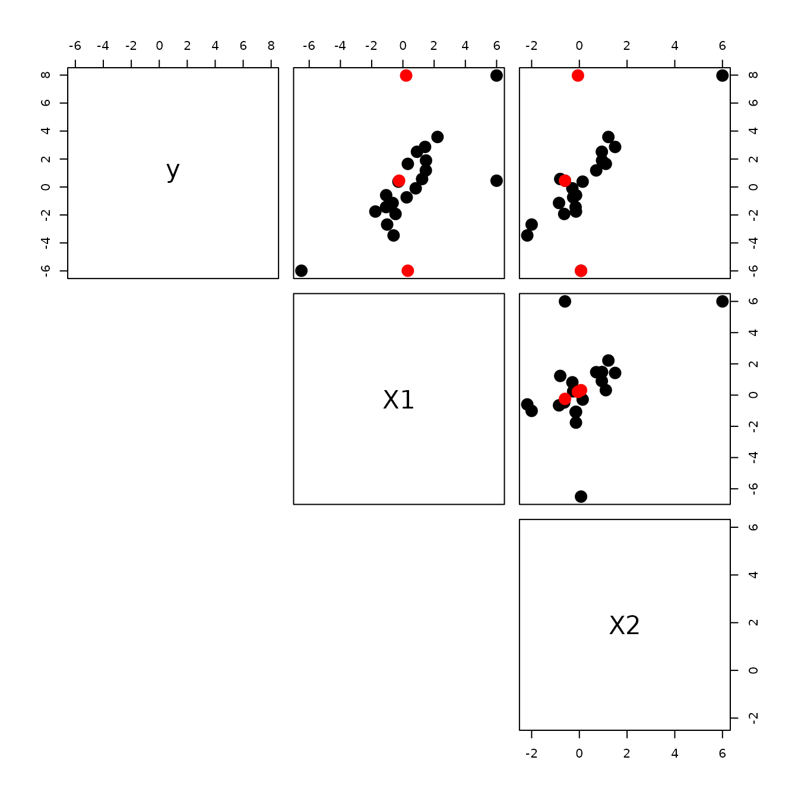
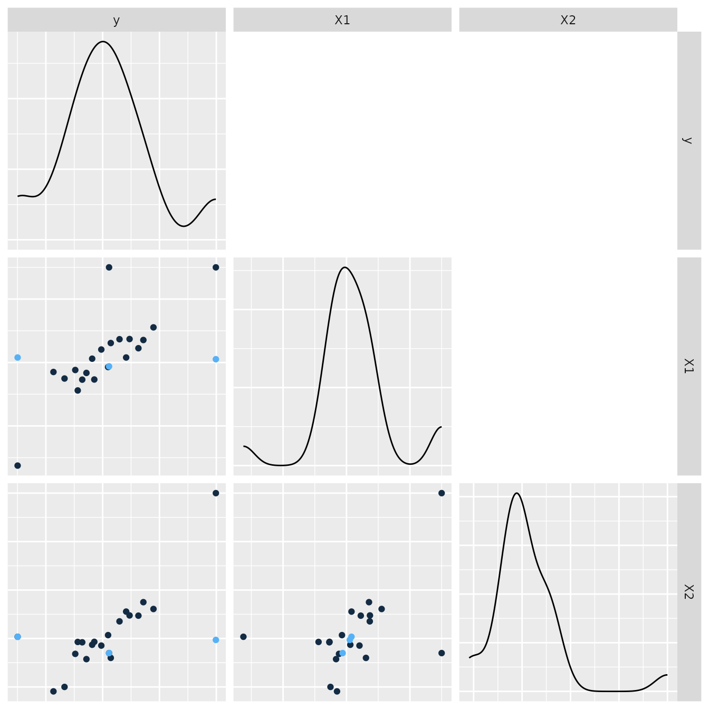
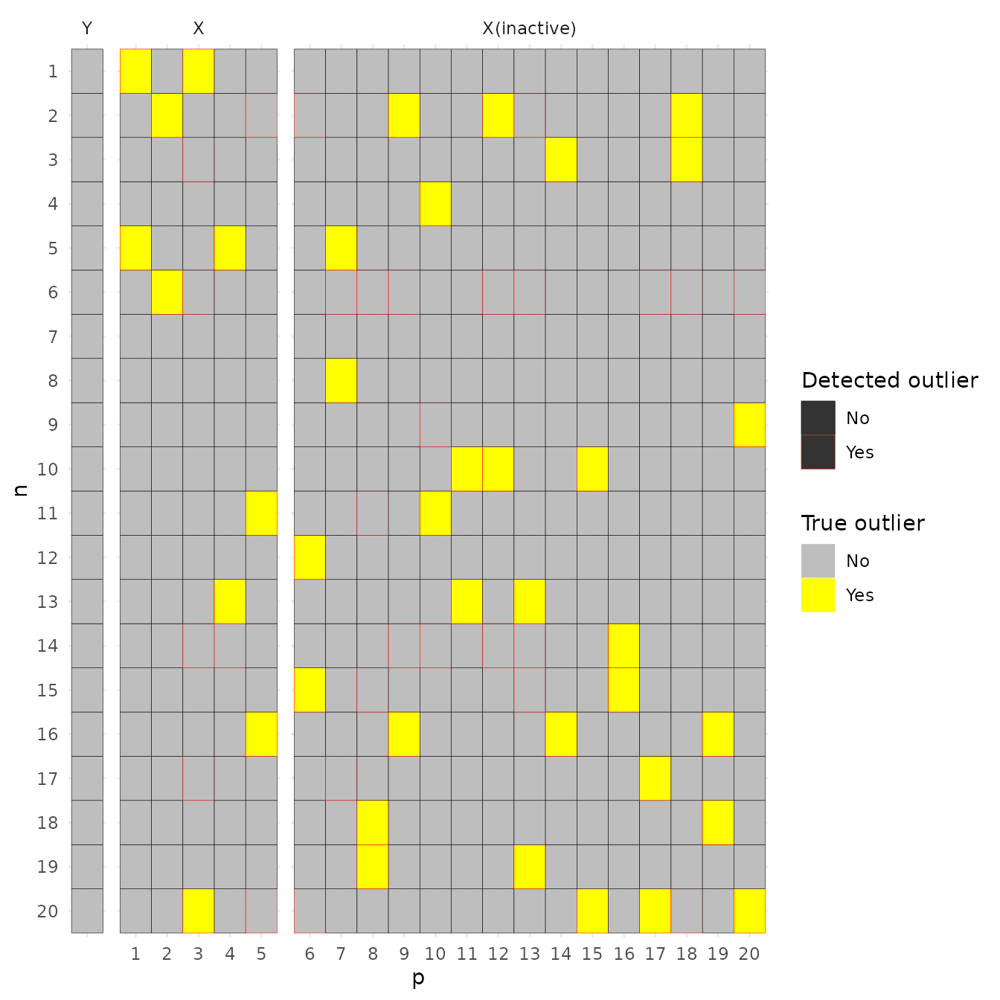
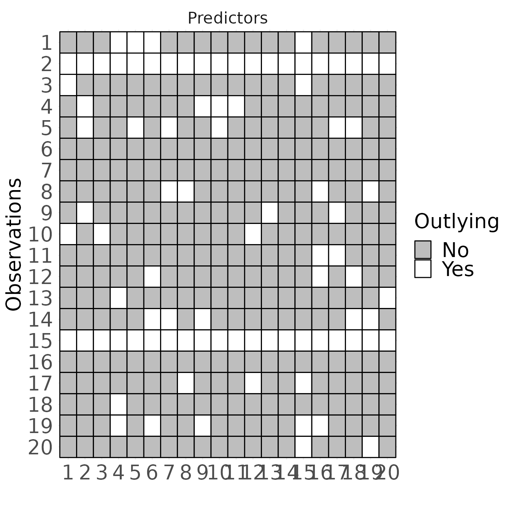

Visualization.Rmd
library(cellWise)
set.seed(5)
dataset = srlmcell::genevar(p = 2, n = 20, beta = c(1,1), df = 0, r = 0, e = 0)
x = dataset$x
x[1,1] = c(6)
x[2,1] = c(-6.5)
y = x[,1] + x[,2]+rnorm(n = 20, sd = 0.5)
x[3,1] = c(6)
x[1,2] = c(6)
fit1 <- DDC(x)
#>
#> The input data has 20 rows and 2 columns.
x = rbind(x, fit1$Ximp[1:3,])
label = factor(c(rep(1,20), rep(2,3)),labels = c("Origion", "Imputation"))
x = cbind(x, label)
mat = as.data.frame(cbind(y,x))
colnames(mat) = c("y", "X1", "X2","label")
#mat$label = factor(c(rep(1,20), 2:4),labels = c("clean observations", "Point a", "Point b", "Point c"))
#pairs(mat[,1:3], pch = 19, xaxt='n', yaxt='n')
upper.panel<-function(x, y){
points(x,y, pch=19, col=c("black", "red")[mat$label], cex = 2)
r <- round(cor(x, y), digits=2)
#usr <- par("usr")
#on.exit(par(usr))
# #par(usr = c(0, 1, 0, 1))
# text(x[3], y[3], "a", col = "white")
# text(x[2], y[2], "b", col = "white")
# text(x[1], y[1], "c", col = "white")
# text(x[23]-0.4, y[23], "a'")
# text(x[22]-0.4, y[22], "b'")
# text(x[21]-0.4, y[21], "c'")
}
pairs(mat[,1:3], lower.panel = NULL,
upper.panel = upper.panel)
fit1$Ximp[1:3,]
#> X1 X2
#> 1 0.2073249 -0.05914534
#> 2 0.3146155 0.07014277
#> 3 -0.2439201 -0.60290798
library(GGally)
ggpairs(mat, columns = 1:3, ggplot2::aes(colour = label), upper = NULL, , axisLabels="none") 
set.seed(5)
data = srlmcell::genevar(n = 20, e = 0.1, p = 20, pr = 5, df = 3,r = 0.5, gamma = 10, outtype = "cellwise")
ximp <- suppressMessages(cellWise::DDC(data$x)$Ximp)
#>
#> The input data has 20 rows and 20 columns.
df <- expand.grid(n = 1:20,p = c(1:21))
df$n = as.factor(df$n)
levels(df$n) = as.character(20:1)
df$p = as.factor(df$p)
levels(df$p) = c(" ", as.character(1:20))
df$type = rep(factor(c("Y","X", "X(inactive)"), levels = c("Y","X", "X(inactive)")),times = 20*c(1,5,15))
df$`True outlier` = factor(c(rep(0,20),as.numeric(data$outlierlabel)), labels = c("No", "Yes"))
df$`Detected outlier` = factor(c(rep(0,20),as.numeric(ximp!=data$x)), labels = c("No", "Yes"))
p111 = ggplot(df,aes(p, n)) +
geom_tile(aes(colour = `Detected outlier`, fill = `True outlier`))+
# scale_size_manual(values = c(0.5,1))+
scale_fill_manual(values=c("gray", "yellow"))+
scale_color_manual(values=c("black", "red"))+
facet_grid(.~type,space = "free", scale = "free")+
theme_minimal()
p111
#ggsave("illis2.eps", plot = p111, width = 10,height = 9)
n = 20
p = 20
df <- expand.grid(Observations = 1:n,Predictors = c(1:p))
df$Observations = as.factor(df$Observations)
levels(df$Observations) = as.character(n:1)
df$Predictors = as.factor(df$Predictors)
levels(df$Predictors) = as.character(1:n)
set.seed(1)
rowoutlier = rep(sample(c(rep(0,n-2),rep(1,2))),p)
celloutlier = sample(c(rep(0,n-3),rep(1,3)), size = n*p, replace = TRUE)
df$Outlying = factor(as.numeric((rowoutlier+celloutlier)!=0), labels = c("No", "Yes"))
# df$type = rep(factor(c("Predictors(active)", "Predictors(inactive)"),
# levels = c("Predictors (active)", "Predictors (inactive)")),times = n*c(10,p-10))
df$type = "Predictors"
p111 = ggplot(df,aes(Predictors, Observations)) +
geom_tile(aes(fill = Outlying, color = Outlying), linewidth = 0.5)+
scale_size_manual(values = c(0.5,1))+
scale_fill_manual(values=c("gray", "white"))+
scale_color_manual(values=c("black", "black"))+
facet_grid(.~type,space = "free", scale = "free")+
theme_minimal()+
labs(x = "")+
theme(text=element_text(size=20), #change font size of all text
axis.text=element_text(size=20), #change font size of axis text
axis.title=element_text(size=20), #change font size of axis titles
plot.title=element_text(size=20), #change font size of plot title
legend.text=element_text(size=20), #change font size of legend text
legend.title=element_text(size=20)) #change font size of legend title
p111
#ggsave("illis2.eps", plot = p111, width = 9,height = 8)